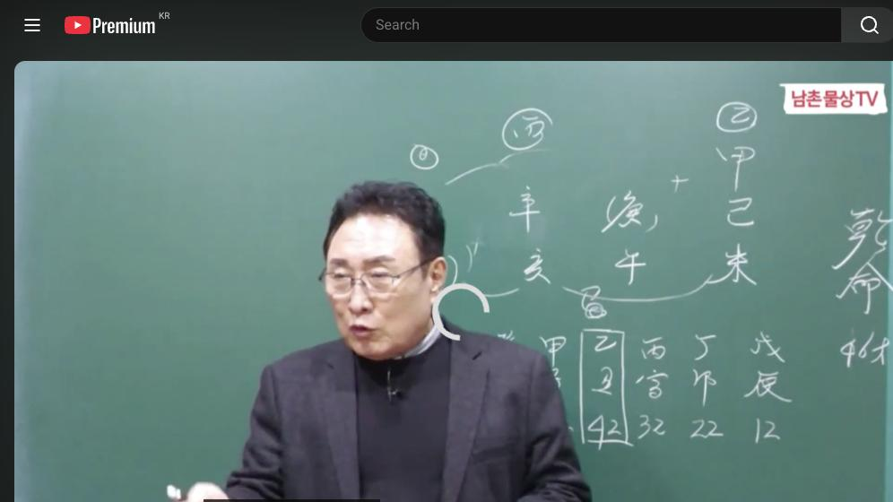

남촌물상TV 전체 문서 › 동영상 V0102
금이 많은 사람에게 맞는 이상적인 직업은?

| 문서 번호 | V0102 (동영상) |
|---|---|
| 영상 URL | https://www.youtube.com/watch?v=3WX0epJKYbs |
| 영상 ID | 3WX0epJKYbs |
| 게시일 | 2024-11-18 |
| 길이 | 21:32 (1292초) |
| 조회수 | 1,513회 (수집 시점 기준) |
| 카테고리 | Howto & Style |
| 자막 | ko (자동생성) |
| 수집 시각 | 2026-08-30 19:08 (KST) |
영상 설명 (YouTube 설명 원문 그대로)
금이 많은 사람에게 맞는 이상적인 직업은? #사주팔자 #사주풀이 #금이많은사주
전체 자막 (476구간 · 타임스탬프 클릭 시 해당 장면으로 이동)
[0:00]신신 되게 되면은 나중에 세계
[0:03]되잖아요 그래서 세계로 움직일 수
[0:06]있는 그런 업체를 가지고 있는 사람이
[0:08]되는
[0:11]것이고 김미 경호 신의 신묘 어 이런
[0:16]사주들이 보면 이제 그 아 금이 많네
[0:19]생각할 거 아니에요 금이 많다 당연히
[0:22]많기 많아요 그래서 우리들이 그전
[0:25]공부할 때 생각을 하셔야 돼 왜
[0:28]그러냐면이
[0:30]칼로서 전제로 상으로 해석을 하고
[0:32]했단 말이에요 그 칼은 칼 자루가
[0:34]있어야 되잖아요네 그럼 세 개
[0:36]칼자루가 필요한 거예요 자 경금은
[0:39]갑목의 칼 차로가 필요할 거고이
[0:41]신금은 을목의 칼 차로가 필요할
[0:43]것이다 그런데이 사주 자체를 보면 칼
[0:47]자루가 헤엄이 다 밑에가 있어 그죠
[0:50]왜 있야 내 칼 자칼 그 칼 자료를
[0:53]쓸 건데 밑에 있으니 내가 칼 날이
[0:56]될 수밖에 없다 그 말이에요 그러니까
[0:59]내가이 칼날을 어떻게 내가이 일을
[1:02]해서 먹고 사는가 이게 이제 이사주
[1:05]특성이해음 그러니까 우리들이 얼른 볼
[1:08]때 그 물상의 시 가장 쉽잖아요
[1:11]어렵게 이해할 필요 없어 그러니까
[1:14]항시 반대 급부를 생각하고 제가 그
[1:16]저 기출 시가 얘기하 대로 대법을
[1:19]얘기하듯이 아름다운 곳이 있으면
[1:21]보이지 않는 데는 아름답지 않는
[1:23]그늘이 있어 이게 생각을 바꿔서
[1:25]생각하듯이 그걸 활용을 늘 해 보셔야
[1:27]돼요 주역도 마찬가지입니다 뭐
[1:30]모든 주기가 64기 자체가 그 그
[1:34]대법 관계로 어져
[1:35]있어요 근데 우리들이 이제 이런
[1:37]상적인 해석도 고전에 이해한 거 하지
[1:40]말고 이렇게 생각하면 돼요 자
[1:43]그러면 여기서 이제 재물이란게 어떻게
[1:46]보고 관을 어떻게 볼 것인가가
[1:47]핵심이죠 그럼 이제 재물은 어디
[1:50]있어요 지지로 해미가 있죠 이렇게 자
[1:52]해미가
[1:54]있다 그럼 천간에서 그 어 재를 끌고
[1:59]온 건 어떻까
[2:01]재를 끌어올 수 있다는 것은
[2:04]자 여기에서 갑목을 끌어올 수 있어서
[2:08]을목이 됐고
[2:10]그죠 여기 나는 결과적으로 을목을
[2:13]해서 끌고 오면 신금이 되고 그
[2:15]말하에요 그죠 그럼이 경금은
[2:18]실질적으로 신금의 역할할 수밖에
[2:22]없다데 답이 딱 나온 답이에요 이렇게
[2:25]답이 그러면 자 여기 해석
[2:29]해봅시다 에서 내가 돈을 벌려면
[2:32]어떻게 해서 돈을 벌 것인가를 한번
[2:34]생각해
[2:36]보면 칼 자들이 재물이 다 있어요
[2:39]근데 칼만 놔두고 재물을 활용하지
[2:41]않으면 돈이 안 되는 거 아니에요
[2:43]그러면 자 내가 칼을 칼 날이 돼서
[2:47]칼 자료가 움직이 활동지 움직이면이
[2:50]사주에 재물이 생긴 사주라 그 말이지
[2:52]자 그럼 가볼까요 근데 여기는 경고
[2:56]여기는
[2:57]신의예요 그죠 그 질적인 죄를 제일
[3:01]갈고 있는 건
[3:03]여기죠 자 여기서 이제 생각해 봐 자
[3:07]우리가 생각할 때 나는 해수를 달고
[3:10]있고 끝에는 그 재물을 달고 있어요
[3:14]그러면 자 우리 생각할 때 어린
[3:16]사람하고 사업 안 돼 이제이 생각도
[3:18]하는데 반대급부로 생각할 수도 있어
[3:21]왜 내 자식이 크면 저것도 내
[3:23]거야라고 할 수 있다 말이야
[3:25]여기까지를 생각할 수 있는 그
[3:27]근본적인 것을 여러분들이이를 하셔야
[3:30]된다 그
[3:31]말입니다 그 항시 안 좋으면 항시 안
[3:34]좋으면 세상이 없어요 안 좋으면 좋은
[3:36]것이 오는 거고 또 좋은고 있으면
[3:38]나쁜 것도 있는 거예요 그 그 생각
[3:40]자체를 좀 포괄적으로 생각을 해서
[3:44]답을 정할 수 있는게 좋다 이렇게
[3:46]감당 전해
[3:48]있잖아요 그러면 여기 이제 신신이
[3:51]글이 오면 신신이 자 모든 것이
[3:53]세기가 됐다 여기서 이제 병화를
[3:56]강하게 꿀 거 아닙니까
[4:00]병화를 끌고 왔을 때는 어디가 제일
[4:03]강할까요 경우 경우가 제일 강하지 아
[4:07]그러면 생각해보세요 여기에 칼자루로
[4:10]쓰는 동일업종 이거 봐 두 사람
[4:13]같아이 물에서 놀고 헤미 해 주기
[4:16]때문에이 사람은 지금 현재 두 개
[4:18]업종을 하고 있는
[4:20]거야 새로운 업종을 할 때는 여기에
[4:23]경 5를 쓸 수 있는 신 5를 쓴다고
[4:27]보시면 돼 그럼 사미가 서겠죠네 그럼
[4:30]여기에서 이제제 사라는 글씨가 붙은
[4:33]것은 경금의 을경 불에서 신금 신금의
[4:37]뿌리가 음이기 때문에 사축이 되는
[4:39]거예요 근거없이 된게 아니라 그러면
[4:42]사미가 되죠 이때는 아름다움을 추구할
[4:44]건데 그 말입니다 그죠 그러면 자
[4:48]그럼 풀 타을 거 아니냐 그럼 자
[4:51]여기에서 한번 더 생각해 보자 네가
[4:54]아름나 추구하는데 어떻게 먹고 살
[4:55]것인데 뭘로 할 건데 이게 보면 자
[4:59]여기에서게 에서 을목이 됐죠 잘
[5:02]보세요 여기서 여기서 혼동하면 안
[5:05]돼 여기 이제 여러분들이 잘
[5:08]이해하셔야
[5:10]되는데 자 각목에서 각기 합의 을목이
[5:15]왔죠네 을목은 누구야이
[5:19]사람한테
[5:20]여자지 나보다 더 많은 여자일 거라
[5:24]말이에요 여자 그럼 그 여자가 왔을
[5:27]때 노순이 되는 거예요 그말 뭔
[5:30]얘기냐 신금에서 평신 합수를 할 거
[5:34]아니에요 합수를 물이 생겼어요 그러면
[5:38]물이 생겼다는 얘기는 여기 해묘미 안
[5:40]된다 얘기예요 그렇죠 그러면 자
[5:44]여기에이 두개 업종은 여기하고 다른
[5:48]업종을 할 수 있다고 생각할 수
[5:50]있죠 그렇죠 그러니까이 사람이 할 수
[5:54]있는 일은 두 개 업종에 새로운 거
[5:57]하나더 추가로 하는 것은 아까
[5:58]아름다움을 추가할 수 있는 거 그럼
[6:00]뭐예요 신금의 뿌리가 유금이 유금의
[6:03]사이 거 아니에요 그래 손기술 가지고
[6:05]하는 거 그래서 뷰티 사 이런 거
[6:09]내일 뭐 칼 내은 거 뭐뭐 있잖아
[6:11]요새
[6:12]응 내일같은 거 칼날은 거
[6:15][음악]
[6:16]있어음 그러한 것을 할 수 있는
[6:19]거예요 그러면 자 여기에서 새로운
[6:22]여자가 만났다고 생각할
[6:25]때 그 자는
[6:28]누구였냐 그자 냐 그 말이지 나하고
[6:33]관계 나하고 관계는 뭔
[6:37]관계 여기가 무슨 해의
[6:41]관계야는 자 사유의 유금이 잘 봐요
[6:45]유금이 나한테 물에
[6:48]놀지네 그럼 나하고 관계성 있는
[6:51]여자지 얼 선 얼른 생각에 들어와야
[6:54]돼 상의 프 연상의 와이프가 아니라
[6:58]이미 여기는 칼 로 돼 있는 통구이
[7:01]돼 있는데
[7:03]연상에 내가 사귈 수 있고 그런
[7:06]사업체를 운영한 그 관계성이 있는
[7:07]여자가 온다이 말이지 그거는이 물에
[7:10]논다는 뜻은 뭔 말이야이 사람이이
[7:13]사람이 헤매면 돈은 되고 나는
[7:15]기술력을 가지고 오는데 이거는 남녀
[7:18]관계성으로 보면
[7:20]되잖아 자 그때는 애인이 될 수 있고
[7:23]왜 생각을 안 해 그럼 외부에서 각게
[7:26]합을 해서 이거 이건 합이 된 거
[7:28]시예요
[7:30]그러면 여기에서 똑같은 동일한
[7:33]금이라고 생각할 때 사업책 하나지 세
[7:35]개가 될지 그런데 유금의 뿌리가
[7:39]노는게 여기서 놀고 있다이 말이지
[7:42]물에서 그러니까 내면 보이지 않는
[7:44]물에 놓은게 뭐요 여인 관계지 이제
[7:46]그런 관계성이 그러면 자이
[7:49]사람은 다른 여자를 보고 가정에
[7:53]흔들릴까 한번 생각해 봐요 흔들릴까
[7:56]안 흔들릴까 안흔 안 흔들리지
[8:00]자 거기까지
[8:01]알았으면 다른 여자가서 물에 놓은
[8:04]것은내는 관계가 아니라 애인 정도
[8:07]되는
[8:08]거야여 이해 하셨어요 그러니까 우리가
[8:11]이제 이런 것을 볼 때 아이 사람은
[8:13]가정을 지키 지키되 본인이 그 엔조이
[8:17]대상이라 그가 뭔가 사업사 필요한
[8:19]얘를 드려서 돈을 벌고 넣도 좋고
[8:21]놔도 좋고 이거 이제 이런 것을 눈에
[8:23]들어올 수 있게끔 상담할 줄 알아야
[8:25]된다 그 말입니다 제가 이거 100%
[8:28]다 짚었습니다음
[8:31]자 근데 우리들이
[8:33]이제 그 물상인 해석할 때 그냥
[8:37]간단하게 뭐 사유축 유금이 사오미
[8:39]같았어 이렇게 생각하면 안 돼 거기서
[8:42]한걸음 더 나가서 더 깊게 그럼
[8:44]사유축 금은 뭔데 자 금이라는 거 그
[8:47]놀아 그럼 금 어디서 놀아줘요 물에서
[8:49]놀겠네 그럼 나의 해수에서 놀지 자
[8:53]그러면이 사람이 어느 때 인생의
[8:57]전성기가 올 거냐 그 말이지
[9:00]인성이 전성이 올 거냐 또 그다음에
[9:03]생겨 우리들이 제 원국 해석을 다
[9:06]했어요 국 해석을
[9:08]그러면이 사람
[9:10]입장에서는 어느 때 사람맞지 인생의
[9:13]전성기가 올 거냐 그
[9:15]말이에요 여기가 제 전성인
[9:18]거예요 쪽 대운이 전성인 거야이
[9:21]사람은 여기서 돈을 제일 많이 벌어
[9:23]자 그럼 왜 볼까 왜
[9:26]볼까 자 을경 합을 하면은 사가
[9:30]부터지 인신 사회지 새로운 견 시작을
[9:33]한 것이 요걸 거이다 보고 새로운
[9:35]변화가 자 그렇게 하면은 여기 이제
[9:39]을목이 신신이 세 개가 돈을 버는
[9:41]거지 자 그것이 우리가 아까
[9:43]설명하듯이 두 개는 동일 업종에서
[9:45]점포가 두 개 가지고 있는 것이고요
[9:48]때면 하나 더 생겨서 세 개의 점포가
[9:50]될 수 있기 때문에 인생의 전성을
[9:52]많이 벌 때 온다 이렇게 하는 겁니다
[9:54]그 이렇게 알면 다 하는 거지 사주
[9:56]뭐 여기에서 우리 금피 말만 붙이면
[9:59]그냥 100% 100% 척척척 정 뭐
[10:01]어 거기서 살만 붙이면 돼 우리 동수
[10:05]선생님도 잘하지 살만 붙인
[10:07]것은음 이제 그렇게 하시다 보면 사주
[10:11]끝나는 거예요 어릴 거
[10:13]없어요 뭐 언제 결혼 했냐가 중요한
[10:16]거요이 사람은 우리는 항시 얘기하지
[10:18]공부하니까 결혼시기 언제 있을까요
[10:21]이런 공부 차원에서 하는 것이지
[10:23]지금이 사람이 나이가 42세가 됐는데
[10:26]해묘미 돼 있는데 결혼 않겠어요 다
[10:27]했지 인내 한목 염이 다이 안에서
[10:30]했을 거
[10:31]아니에요 부유 합의도 했을 거
[10:33]아니에요 그러니까 결혼이 전제가
[10:36]중이라이 사람의 현재 사업성과이
[10:39]사람이 돈을 벌 수 있는 과정이
[10:41]어떻게 하면 벌 수 있는가 자 그
[10:43]사업체 하나 있을 때 돈 많이 벌
[10:45]세기 돈 보잖아요 그
[10:47]성기지 그 이렇게 보시면 이제 사람
[10:50]쉽게 할 수가 있다 어렵지 않죠 그게
[10:55]지금 여러분들이이 혼동하고 계신게
[10:58]뭐냐면 그냥 그 내가 강의 하던 일
[11:02]그대로만 써 그건 맞아 틀린게 아니야
[11:05]근데 한 번쯤은 바깥 내 저 생각을
[11:08]내가 확시 접목하라 그랬잖아요
[11:10]교수님이 이렇게 얘기했는데 내 생각은
[11:12]이렇다는 것을 접목을 시켜서 한번
[11:14]바꿔 봐라 그러 더 깊이가 있게 볼
[11:17]거 아니에요여 강의할 때 더 깊이
[11:18]나갈 수가 없어 여기서는 상담할 때는
[11:21]더 깊게 깊게 해서 모든 것이 통용이
[11:24]되지만 그렇지 않는 경우는 안 되는
[11:27]거예요 여기에서 막 계속 뭐 사적인
[11:29]얘기 거기 관계선 다 풀어서 얘기를
[11:31]못 해 상담할 때는 그걸 하지 그래
[11:34]여기서 원칙적인 얘기만 하는 것이지
[11:35]강의 시간에는 사적인 공개 공기 그
[11:38]관계성은 얘기 안 한다 그래서 이제에
[11:41]우리 유튜브 보신 분들이 그어 상담해
[11:44]보면 어 한 달 해서 잘하 사람 있어
[11:48]얼마를 많냐면 한 달만에 몇 번씩을
[11:51]다 뒤집어서 다 봤답니다
[11:54]그 여기에서 우리 안 나온 사람도
[11:56]그렇게 열심히 하고 있어요 그런
[11:57]사람들이 그래서 이제 하다가 가 뭘까
[12:01]딱 제 피고 메카니즘 있지 그럴 때
[12:04]이제 전화가 따르는 겁니다 제가 한번
[12:06]상담하고 싶은데 이렇게 뚫는 거예요
[12:09]자 그러면 우리가 지금 현재 하는이
[12:14]업들이에 경쟁에서 반드시 이겨야
[12:18]성공합니다 앞으로 사람이 많은 데가
[12:20]많잖아요 한참 타로사이 엄청나게
[12:24]많았었어요 근데 벌써 10년 주기가
[12:26]넘었으면 이제는 또 한번 바꿔줄 때가
[12:29]되는 거 우리 모든이 현상은 10년
[12:32]주기로 우리가 바뀌잖아요 그러니까
[12:35]10년이 됐기 때문에 이제 타로
[12:37]관계성도 어떻게 난무하게 돼 있어
[12:40]그래서 가격도 이제는 다운되고 그냥
[12:43]너나 나나 탈 줄 알아 이렇게 돼
[12:45]있단
[12:45]말이에요 그럼 우리 그 남는 거는
[12:48]뭐예요 우리 하는 것뿐이야 물상을
[12:51]잘해야 돼 그럼 자 똑같은 사주를 볼
[12:54]때 고정을 본 사람 우리 유튜브
[12:57]보니까 어떤 사람 어떤 분이 이런
[12:58]분도 있어요 그 제다 신작인데 돈을
[13:01]많이 버냐고 고전에 그 없는 얘기
[13:04]아니냐 자 이렇게 하시죠 그래서 제가
[13:07]다글 달았습니다 여기서는 격국 용신
[13:10]시장 포트 쓴게
[13:12]아니라 제가 만든 물상을 관복으로
[13:15]적용하면 우리는 그거하고 상관이 없다
[13:18]이제이 얘기를 제가 써 드렸어요 근데
[13:22]어 우리 공부를 그 안 해본 사람들은
[13:24]그렇게 얘기를 하죠 대부분이 아 무슨
[13:27]뭐 용신도 없고 아무것도 없는데 뭘
[13:30]너들이 뭐 제다 신인데 그래 이렇게
[13:32]하죠 제다 신약에 돈 못 본 거
[13:35]아니에요 법니다 그럼 우리가 생각할
[13:37]때 무죄라 해서 돈 못 벌어요 아니죠
[13:41]벌어요 근데 보통 사람들이 생각할 때
[13:43]고지 뭐냐 무죄 사주는 돈을 못 벌어
[13:45]이렇게 생각하고 있단
[13:47]말이에요 그런 사고
[13:49]방식을 1300년 전에 서자 평이
[13:52]하는의 원칙을 지금까지 도용해서
[13:55]쓰겠냐 그 말이야
[13:56]우리가 당시 제가 얘기하잖아요 철학은
[14:00]시대 아들이야 그 시대를 반영하는
[14:02]철학으로 가줘야 한다 이게 현실이고
[14:05]우리가 할 수 있는
[14:06]일이에요 이것만 잘하시면 스스로
[14:09]우리는 뭔가는 자동으로 댈 수 있어
[14:12]그리고 같은 업종 동종 업끼이 우리
[14:15]보 선생님 걱정할 필요
[14:17]없어 오히려 그 사람으로 인해서 더
[14:20]사람 끌어 주는 역할을 할 수가
[14:22]있어요 그 사람이 그러면 그 손님이
[14:25]나한테 안 오냐 오게 돼 있어요
[14:27]차별화가 되게 돼 있다 그 말입니다
[14:30]저는 분명히 했어요 여기서 확실한
[14:32]사람 경쟁 이게 자신 있어요 대로만
[14:34]가서 해주면 어떤 경쟁에서도 이길 수
[14:37]있는
[14:38]거예요 제가 상담을 해 보면 손님들이
[14:40]와서 그럽니다 그
[14:42]어어 너무 자기들 생각이 잘 맞다고
[14:46]저는 사주 그렇지 제가 그렇지 저는
[14:48]맞춰주려고 한 거 아닙니다 다른
[14:50]사람들은 미리 과거에 있었던 것을
[14:53]얘기를 하죠 근데 우리는 어떤 거냐
[14:56]미래 지향적인 것을 얘기해 주는
[14:58]거예요 이제 예 원국 해석은 다 됐죠
[15:01]자 원국 해석 궁금한 거 없죠 자
[15:04]그러면 전성기까지 해 줬어요
[15:06]전성기까지
[15:08]그러면 여기에인에 자이 해묘미이
[15:12]자체가 자식한테 근본적으로 줄 때가
[15:15]언제냐 그 말이에요 이제 자 우리가
[15:17]모든 사람들이이 사주는 가업을 승계도
[15:20]되는
[15:23]사주야지 자리까지 가기 때문에가
[15:26]가업을 성겨 주다 그러이 사람이
[15:30]처음 사업할 때는 밑에 놈만이 돈을
[15:32]잘 벌어줄 수 있다라고 생각하고 근데
[15:35]그 사람은 어떤 생각이야 이걸셔야
[15:38]돼이 밑에 있는이 심묘이 사람은 어떤
[15:41]사람일까 무슨 사람이었어요 한번 봐
[15:44]생각을 받고 생각해야 돼 자 우리가
[15:47]이제 사업을 한번 생각해 봐요 제가
[15:50]이제이 기업체 상담을 하면은 이제
[15:53]회장들이 오셔서 대부분 그럽니다이
[15:55]전문 사주 먼 내놓고 상무 내놓고
[15:57]부장 뭐 저 해계 당까지 보통
[16:00]내놔요 그럼 뭔 중요하 거냐면 해의
[16:04]팀은 이놈이 나한테 돈을 먹고 손실을
[16:06]벌 놈이냐 물어보는
[16:08]것이고 어때 경영 지들은 뭐야 요놈이
[16:10]돈 보면 나가서 뭘 할로윈인 가를
[16:12]물어보는
[16:13]거예요이 사람은이 사람은 여기서
[16:17]배우면 나가서 자기 사업할
[16:20]사람이야 이제 이런 걸 여러분들이
[16:23]아시면 상담할 때 밑에 사람을 관리를
[16:27]철대 출미 자리 하셔야한다
[16:30]이걸 해 주셔야 된다 그 말이에요
[16:32]그래야만이 경영자가 아이 사람한테는
[16:36]밑에 테 관리를 켜야 되겠네 우리는
[16:38]어떻게 그
[16:40]상대한테 어떻게 하면 사업을 잘할 수
[16:42]있고 돈을 잘 벌 수 있게끔 해 줄
[16:45]수 있는 방법을 제시한 사람이 누구
[16:48]우리다이
[16:49]말이지 그러 어느 때까지 기다려야
[16:52]되냐 내 아들이 성장해서 승계할
[16:55]때까지 그러면 이제 아들 승계를
[16:58]하면은 다또 내돈이지
[17:00]잘할 수 있어요 그래서 성장 과정에서
[17:04]잘못하면 한 번쯤 실을 겪을 수가
[17:07]있다 그 말입니다 그걸 안 겪기
[17:09]위해서 우리는 어떻게 상담을 해 줘야
[17:11]되고 어느 걸 조심해야 되고 어떻게
[17:14]해 줘야다는 법을 우리는 이해를
[17:16]하시고 해 줘야 된다 그래야
[17:17]여러분들이 그 유능해지고 아 그분
[17:21]대단한 실력 가야 이렇게 소리 듣는
[17:22]거지 단순하게 뭐 옛날 고전 식으로
[17:25]얘 돈 벌겠어요 뭐 학교 가겠네 뭐
[17:29]잘 하겠어요 이런 개념에 이해하시면
[17:32]안 돼 지금은 차원적으로 시대에
[17:35]따라서 바꿔 줘야
[17:37]된다 똑같이 그 옛날처럼 지금 하하고
[17:40]있을
[17:41]거예요 제가 그 저아 얘기했지만 우리
[17:44]유튜브 보는 것도 지금 40대 50대
[17:47]사이가 거의 40%
[17:49]그래요 그렇게 밑에 층으로 내려가
[17:52]있어요
[17:54]그러면 옛날에는 우리 어머니 가서
[17:56]우리 아들 사주러 갔단 말이에요 지금
[17:59]그 안 그래 본인이 직접 내가 뭔가
[18:01]내가 알아 해요이 시대가 왔기 때문에
[18:04]여러분들은 지금 차별화가 되지 않고는
[18:08]경쟁에서 이길 수가 없다 그 말입니다
[18:11]자 아시겠죠네 자 그러니까이 이것만
[18:15]하면 사주 다 보는 겁니다 더 볼
[18:16]것도 없어요 어 언제 너는 문제가 될
[18:20]거고 언제 너는 돈을 벌 거고 전성기
[18:21]거고 돈을면 어떻게 활용할 것인가 자
[18:24]그러면 여기 최종 단계서 돈을 벌면
[18:27]뭐 할 건데 그 말이에요 생각을
[18:30]여기서 안식을 써야지 우리가 자 기토
[18:34]그 저 나무를
[18:36]심을거다이 생각만 하면은
[18:39]거기까지야 자 여기이 생각은 누구예요
[18:43]학생 같으면 엄마 생각이지 도생은
[18:46]엄마 생각 생 자 그럼 엄마가
[18:49]생각하기는 뭐야 내 자식은 큰
[18:54]나무 자 큰 나무를 만들고 싶다는
[18:58]것이 부동산의 큰 재물을 가진 걸
[19:01]원하고 있구나 할 수 있잖 그러면이
[19:04]사람이 꿈 뭐예요 큰 나무를 큰 땅에
[19:09]심어서 결과 본인이 다듬어주면
[19:12]역할하겠다이 얘기예요 이제 그런 것을
[19:15]여러분 생각하면 그럼 큰 큰
[19:17]나무라는게 그 제대로
[19:19]될까이 근거가 있어이 사람은 왜
[19:23]그러냐 지지에서
[19:26]임묘 묘미가 될 수 있는 보시면
[19:29]갑목을 성장할 수 있는 거예요 그래요
[19:31]안 그래요 그래요 뿌리가 튼튼한
[19:34]나무는 가지가 무성하다 그게 뭐예요
[19:39]자성으로 근고
[19:42]지형이다 근고 지형 우리 보세요 자
[19:46]근고 정이란 말이요 가지가 무상하다
[19:49]그 말지 뿌리 튼튼 뿌리가 튼튼하면
[19:53]가지가 무한 열매도 좋다 그 얘기
[19:55]아닙니까 결실이 좋다 그러면 이제 저
[19:58]미 적으로이 사람한테 그 얘기를 해
[20:00]줘야 돼 안 해줘야 돼 이게 이게 그
[20:02]사람은 그 소리를 듣고 싶은 거예요
[20:04]그걸 게워서 우리가 만들어 주는 거고
[20:07]아까 그랬잖아요 해 묘미가 되면
[20:10]갑목의 뿌리를 형성시킬 수 있다 그
[20:14]말입니다 그러면 큰 재물이 크게
[20:16]이어진 거예요 자 그러면 뭐야 우리가
[20:18]이제에 법무 법인이 법무 법인이 왜
[20:21]되느냐 로파이 왜 있어요 많은 신금이
[20:25]모여서 합부 해야 돈 크게 벌기
[20:27]때문에 하는 거예요
[20:29]절대 사 잡는 사람은 재벌가가 없어
[20:33]그렇지만 변호사가 전부 여럿이 모여서
[20:36]높은을 만들거 대표 시장은 돈 버는
[20:39]거예요 그러기 위해서 높은 만드는 거
[20:42]달리 만듭니까 여기도 마찬가지 인이
[20:45]아 예 신 신의로 되게 되면은 나중에
[20:48]세 개가 되잖아요 그래서 세 개로
[20:51]움직일 수 있는 그런 업체를 가지고
[20:53]있는 사람이 되는 것이고 아까 큰
[20:56]갑목을 심어서 끌을 수 재물을 가질
[20:58]수 있는 것은 뿌리의 해이 인내 한이
[21:01]되기 때문에 가능하다 이렇게 그래서
[21:05]정확한 근거를 대고 설명을 하시면
[21:08]손님은
[21:09]아하이 우리 아들이이 아들은 어떻게
[21:12]하면 성장할 수 있고 어떻게 하면 잘
[21:15]될 수 있겠네 하고 아주 정확하게
[21:17]답을 드을 수 있는 겁니다 자 우리가
[21:20]다음 시간에도 더 유익한 사주를
[21:23]가지고 유튜브를 보신 시청자나 또
[21:26]우리 배우고 싶은 학생들이나 많은 에
[21:29]도움이 됐으면겠습니다 자
[21:30]수고하셨습니다 감사합니다
칠판 원국 판독 (영상 프레임을 AI가 시각 판독 · 원판 대조 필수)
坤造
천간
乙
천간
己
천간
辛
천간
壬
지지
酉
지지
亥
지지
卯
지지
午
판독 신뢰도: 중간
판독 노트: 칠판 8자, 년주 강조, 충(沖) 표시, 대운수와 결론 · 시점 16:09 · 해당 장면 보기↗
자막은 YouTube에서 제공하는 한국어 자동음성인식(ASR) 트랙의 원문입니다. 고유명사·한자 용어·숫자 표기에 자동인식 특유의 오류가 있을 수 있어, 원문을 가능한 한 그대로 보존했습니다. 위에 칠판 원국 판독 섹션이 있는 영상은 화면 프레임을 AI가 시각 판독한 것으로 신뢰도 표기를 확인하고, 없는 영상은 화면 도표가 문서에 포함되지 않습니다.